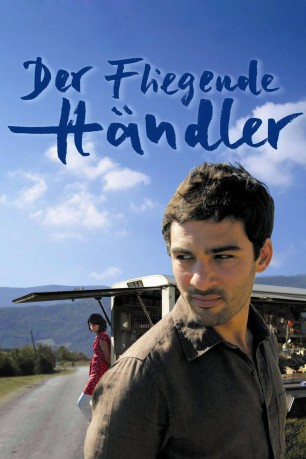
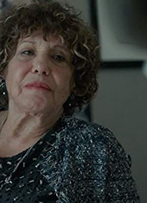

#5328 Der Fliegende Händler
Alternativ: The Grocer's Son (Englischer Titel)
 
 IMDB-Wertung: 7.1 / 10
IMDB-Wertung: 7.1 / 10  Metascore: 0
Metascore: 0 
Leichte Komödie um einen Mann, der den Job seines Vaters übernimmt und dafür in das Dorf seiner Kindheit zurückkehrt. Dort lernt er nicht nur die Natur zu schätzen, sondern setzt sich mit seiner Kindheit und seinen Gefühlen für seine beste Freundin auseinander.
Jahr: 2007
Dauer: 93 Minuten
FSK: 0
Land: Frankreich Studio: Arsenal FilmverleihTonspuren:
Untertitel:
Auflösung: 720p (1280x720) Größe: 2426 MB
Genre: Drama
Regisseur: Eric Guirado
Drehbuch: Nic Balthazar
Soundtrack:
Darsteller:
- Clotilde Hesme als Claire
 Paul Crauchet als Le père Clément
Paul Crauchet als Le père Clément- Nicolas Cazalé als Antoine
 Daniel Duval als Le père
Daniel Duval als Le père- Jeanne Goupil als La mère
- Stéphan Guérin-Tillié als François
-  Liliane Rovère als Lucienne
- Chad Chenouga als Hassan
- Ludmila Ruoso als Sophie
- Benoît Giros als Fernand
- Gilles Chabrier als Le chef de rang
- Jean-Luc Boucherot als Le docteur village
- Gilberte Muguet als Mamie baskets
- Christophe Mirabel als Père petit garçon
- Odile Tommy Martin als Mamie escargot
- Robert Fayard als Homme hameau
- Jemmy Walker als Femme village
- Robert Court als Homme village
- Robert Juventin als Homme aux petits chats
- Agnès Joniaux als Dame 1
Datei: X:\2007(A-F)\Fliegende Händler, Der (2007, FSK0, 1280x720).mkv seit 13.01.2017
Festplatte: HD 2007(A-Z)-2008(A-F)
 Es gibt insgesamt 65 Filme in der Gruppe '2007(A-F)'
Es gibt insgesamt 65 Filme in der Gruppe '2007(A-F)'